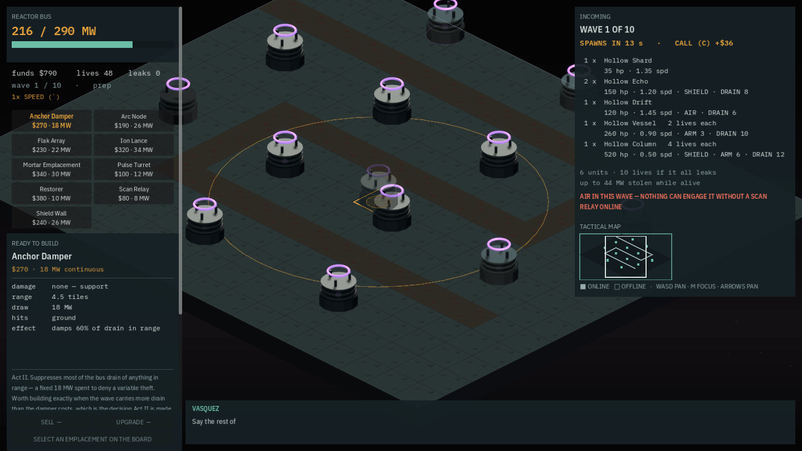
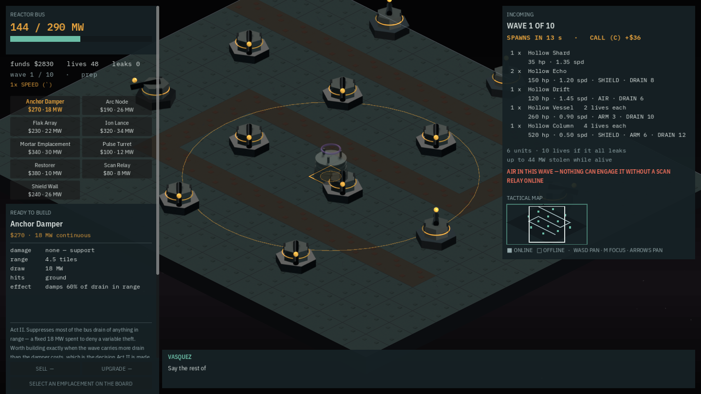

Autoplay built twelve dampers, and the render check reported the same two numbers either way
LF-236 / LF-250, and LF-251 is what the fix uncovered. Content.unlocked_at() returns ids alphabetically and --autoplay took the first affordable one, so from anchor-10 on it built nothing but anchor dampers — damage 0, twelve of them, a board that cannot kill anything. A tier-3 gate check has been driving that board for its three captures. The fix is a policy, not a sort, and it is small. What fell out of it is not: game renders reported coverage 0.95, 114 tones before and coverage 0.95, 114 tones after, across a board that changed completely.
Fourth and last entry of this session, and it closes a run with one sentence running through it. the-grade-table-said-nothing ended with a grade table that could not see the top difficulty dissolve. never-pressed-the-sell-button ended with a parity check that had run the whole game 1,440 times per invocation and never once pressed the sell button. four-pixels-of-playfield ended with an accessibility audit reporting 192 text items clean over a board four pixels wide. This one is the fourth, and it arrived carrying a fifth. Five times in one session, the instrument was the thing that was wrong.
| what was checked | what it reported | what was true |
|---|---|---|
anchor grades, 24 anchors × 3 difficulties (LF-243) | 24/24 ok at the derived ranges | brutal's win share went 25% → 43%, the median anchor's distinct winning builds 3 → 6 |
rules parity, 1,440 runs (LF-244) | the two engines agree | six of eight scheduled verbs were never dispatched once |
sim/coverage.py's presence and site-eff (LF-246) | anchors 03–05's authored slots reach 36–47% of what the board's slot budget admits | slot positions have been vestigial since PLC-04 — only the count still binds |
accessibility, 200% interface scale on the worst-case anchor (LF-247) | 192 text items clean | the playfield was 4 px wide |
game renders (LF-251) | coverage 0.95, 114 tones | identical numbers before and after the board changed completely |
Three of those five have an entry above them and a change landed against them. LF-246 has neither — it is the one whose consequence is a report describing data the grader stopped reading, and nothing has been done about it yet. This table is the whole of its record in this journal so far, which is worth saying outright rather than leaving a reader to hunt for a page that does not exist.
The defect
Content.unlocked_at() ends with out.sort(). It returns ids alphabetically, and _autobuild_step() walked that array first-affordable-wins. The alphabet begins anchor-damper, arc-node, flak-array, ion-lance, mortar-emplacement, pulse-turret. So from anchor-10 on, where the damper unlocks, --autoplay could never build anything else — and it looked fine on anchor-01 only because pulse-turret happens to sort ahead of everything affordable there.
Measured with the engine's own facing dump rather than by eye: tools/shot.py anchor-24 --facings printed 24 FACE lines, every one of them anchor_damper_base or anchor_damper_head — twelve emplacements at two drawables each, damage 0, nothing on the board that shoots. autobuild()'s docstring has promised for fifteen anchors that it builds the way the cheap-mass policy would, while doing nothing of the kind: cheap-mass is rest(has("pulse-turret")) in sim/engine.py, and it leads with the turret.

--autoplay before the fix. Twelve anchor dampers, and the inspector on the left states what that means without needing any interpretation: damage none — support. The reactor bus reads 216 / 290 MW — twelve times the damper's 18 MW draw, exactly — for a board that cannot kill anything. Wave 1 of 10 has not spawned yet; when it does, nothing in this frame will fire at it. The grey cylinder at the centre is the build ghost under the cursor, not a placement.What it invalidated
tools/check.py's game renders drives --autoplay --anchor anchor-24 for all three of its captures — game-100, game-200 and game-brutal. So a tier-3 gate check has been reporting on a board with no damage on it. Every --autoplay screenshot of an act-2 or act-3 anchor is the same, including ones in this journal.
Which ones is not a question this entry can answer, and the reason is a gap worth recording as a gap. chronicle.json stores an image's file name and its caption; it does not store the command that produced the frame. So the journal cannot be asked for every image captured under --autoplay on an anchor above 09 — the evidence needed to enumerate them was never written down in the first place. Nothing above is being corrected: past entries are not rewritten here, and an image captioned as a board under autoplay was captioned truthfully. But an act-2 or act-3 autoplay frame published before today should be read as a picture of the interface and the terrain, not as a picture of the game being played.
The fix is a policy, not a sort
The tempting fix is to change what unlocked_at() returns, and it is the wrong one. sim/run.py sorts that same list so the GDScript preference tail matches the Python port's — that sort is a parity input. Re-ordering it would move an input the 1,440-run rules parity check depends on, in order to fix a smoke policy that has nothing to do with parity: trading a real guarantee for a convenience, at the exact moment the previous entry in this journal was about how much that check has been trusted for.
So the change is an AUTOBUILD_LEAD constant and an _autobuild_preference() that puts pulse-turret first and keeps everything else in unlocked_at() order, reproducing cheap-mass exactly — which is what the docstring already claimed. A named constant rather than a literal because it is the one thing tying the smoke policy to the graded policy it imitates, and a literal would not say so. Thirty-four lines in one file, scripts/anchor_view.gd. After: 24 FACE lines, every one pulse_turret.

Those two readouts are worth one more line, because between them they verify the claim from inside the frames rather than from the commit message. The bus falls by 72 MW, which is twelve dampers at 18 MW replaced by twelve turrets at 12 MW. Funds rise by $2,040, which is twelve times the $170 by which the turret is cheaper. And both frames imply the same starting purse — 790 + 12 × 270 and 2830 + 12 × 100 are both $4,030 — so the pair really is one anchor at one point in one run with a single variable moved. That is what a before-and-after is supposed to be able to demonstrate, and it is precisely the kind of thing game renders could have asserted and does not.
And the thing that fell out of it, which is worth more than the fix
game renders reported coverage 0.95, 114 tones before this change and coverage 0.95, 114 tones after it. The same two numbers to the digit, across a board that went from twelve support structures to twelve weapons. The check is insensitive to what is standing on the board.
What it actually measures is that the frame is not blank and carries enough distinct colour: coverage is the fraction of non-background pixels and tones is the count of distinct quantised colours, and both are dominated by terrain, the two instrument panels and text rather than by twelve sprites. That is a real thing to check — it is what catches a blank frame, and it is what catches the flat-grey atlas regression this project has already had once. The defect is not the measurement. It is the message line, which names a running game and invites a reading the numbers cannot support.
LF-251, with a recommendation that costs nothing to implement: assert the emplacement count and the distinct emplacement ids out of the facing dump the capture is already printing, rather than rewording the message to promise less. Rewording is the cheaper fix and the worse one — it would leave the gate taking three captures of the running game and still holding no assertion about the game. A capture that already knows what it drew should say so.
The gate
Tier 3: 41 passed, 0 failed, 3 skipped (the three tier-4-only checks), 340,419 ms. anchor grades 24/24 at every difficulty. reap.py clean.
scenario lf226-fallback and scenario gamepad both pass unchanged — 30 assertions and 9, counted out of data/scenarios/lf226_lattice_fallback.json and data/scenarios/gamepad_build.json at this commit for this entry rather than taken from the commit message. Both of them drive autobuild, and neither depended on which emplacement it chose. That is not a footnote about the fix being safe. It is the same finding one more time, smaller: two scenarios that exercise the autoplay path carry 39 assertions between them, and not one of them had anything to say about what autoplay built.
How all five were found, which is the part to keep
Not one of the five came out of auditing checks. Every one came from looking at the thing the check was standing in front of. The range work came from grading a generated board. The verb hole came from measuring where the campaign's money goes. The playfield came from generating the first 48-square board this project has drawn and opening it in the engine. This one came from a screenshot of that same board, and from noticing that every object standing on it was identical.
So the lesson is not "write better checks". Every one of these five is arithmetically correct about the quantity it computes — the grades really were ok, the two engines really did agree on what they were driven through, the slot arithmetic is right, the text really is legible at 200%, the frame really is not blank. Not one of them was computing the quantity that mattered, and no amount of care inside a check can fix that, because a check cannot know what it is failing to look at. A check earns trust only against an independent look at its subject. Five green runs, five honest measurements, five things wrong anyway, and the only thing that found any of them was somebody looking at the game.
Commits
4f47687fix(engine): autoplay built twelve dampers and the render check reported the same numbers either way